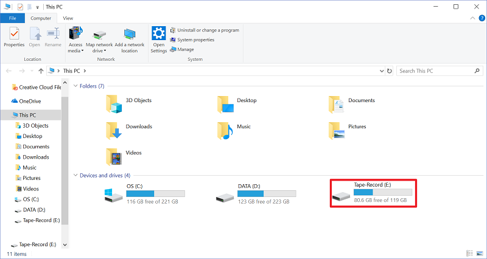
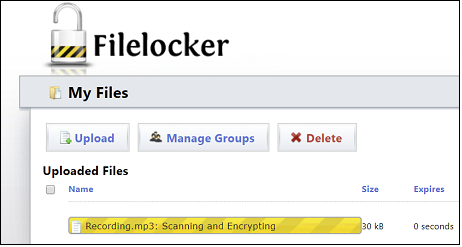

BHRIC Training
Below are instructions on how to connect to the BHRIC. The instructions include how to connect and also how to transfer files to the BHRIC if your research includes audio and video recordings. Please follow the appropriate instructions depending on your research.If you require more assistance on using the BHRIC or if you have any questions about it, please send an email to jsingh@health.fau.edu.
Please note that before connecting to your VM you must have the DUO Mobile MFA App installed on your Android/iOS device, as MFA is required to connect to the VMware Horizon service.
- Open a web browser (for the best viewing experience, it is recommended to use Google Chrome in full-screen mode – make Chrome the active window and press the F11 key on the keyboard, in full-screen mode press the ESC key on the keyboard to exit full-screen mode)
- Once the browser window is open and sized to your preference, visit https://vhealth.fau.edu
- Select VMware Horizon HTML Access as indicated below:
- Enter your credentials in the following format:
Username: fau\(your FAUNet ID)
Passcode: (your FAU password)
You will receive a DUO push notification on your phone, once you approve the authentication request you will be able to view the VM pool. -
Once you are able to view the VM pool, click the VM named CON to connect to your VM.
Please note that multi-factor authentication (MFA) must be set up on your FAU account and the DUO Mobile App must be installed on your smartphone and set up to receive push notifications. Without this will not be possible to sign into BHRIC and access the CON virtual desktop. Please see the link below for additional information if needed:
Two-Factor and Multi-Factor Authentication at Florida Atlantic University
Make sure that the recording device is connected to the physical computer that will be used to access your CON virtual desktop on the BHRIC. In this example the recording device can be seen below as Tape-Record (E:).

- In the Google Chrome web browser, visit filelocker.fau.edu and log in by providing your FAUNet ID+Password, then complete the MFA login by approving the push notification sent to the smartphone through DUO MFA.
-
Once you have signed in and are able to view the Filelocker page, click Upload and navigate to the file to be uploaded. Once the file is uploaded it will be scanned and encrypted.

- After uploading the file or files to Filelocker, follow the instructions provided in step 3(a) if using an FAU-issued laptop or desktop or step 3(b) if not using an FAU issued laptop or desktop.
- If using an FAU issued laptop or desktop, look for the VMware Horizon shortcut on your desktop and launch the application. Alternatively, the VMware Horizon application can be launched from the Start menu under the Program group letter 'V'.
Note: If you do not have VMware Horizon installed on your FAU issued desktop or laptop you may request an installation of VMware Horizon on your FAU issued desktop/laptop by emailing Jony Singh (jsingh@health.fau.edu)
When the application launches a login prompt will appear. Log in using your FAUNet ID+Password in the following format (see screenshot below for example):
Username: fau\(your FAUNet ID)
Password: (your Password)
After clicking the Login button a push notification will be sent to the smartphone through DUO MFA. Approve the notification request to complete the login. - If you are not using an FAU issued laptop or desktop, visit https://vhealth.fau.edu and log in using your FAUNet ID+Password in the following format (see screenshot below for example):
Username: fau\(your FAUNet ID)
Password: (your Password)
After clicking the Login button a push notification will be sent to the smartphone through DUO MFA. Approve the notification request to complete the login.
- If using an FAU issued laptop or desktop, look for the VMware Horizon shortcut on your desktop and launch the application. Alternatively, the VMware Horizon application can be launched from the Start menu under the Program group letter 'V'.
- Click on the CON desktop to access the BHRIC virtual desktop. Once you are in the CON desktop, open the Google Chrome web browser. In the Google Chrome web browser, visit filelocker.fau.edu and log in by providing your FAUNet ID+Password, then complete the MFA login by approving the push notification sent to the smartphone through DUO MFA.
- Click on the file that you’ve transferred to Filelocker in Step 2 to expand the file options, then click Download This File to save the file to your CON virtual desktop. By default, Google Chrome will store downloaded files in the Downloads folder.